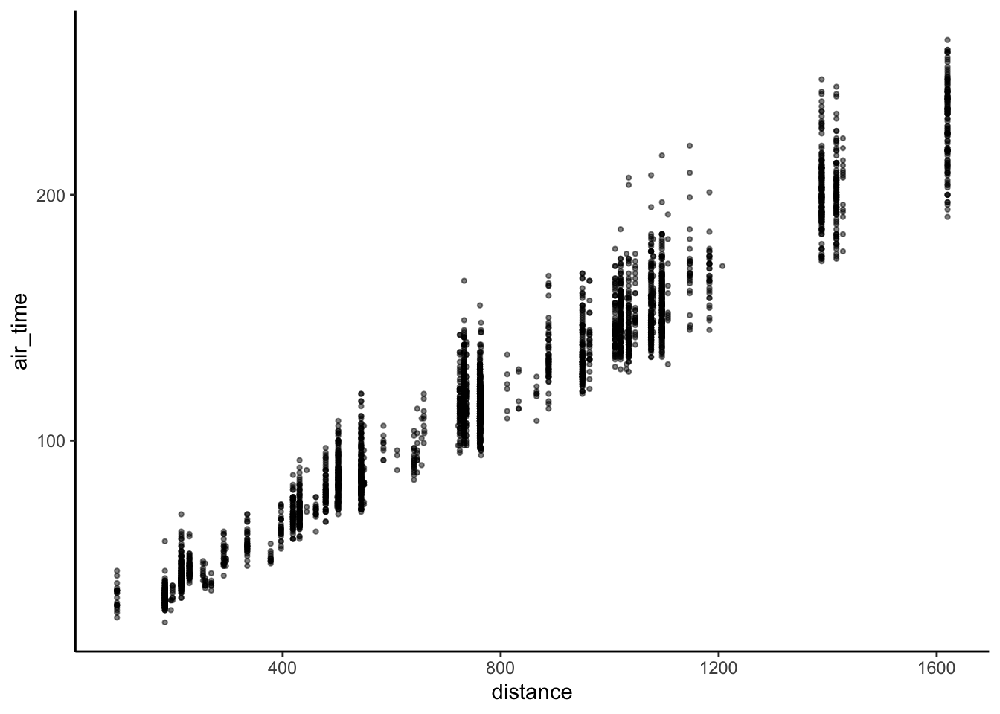
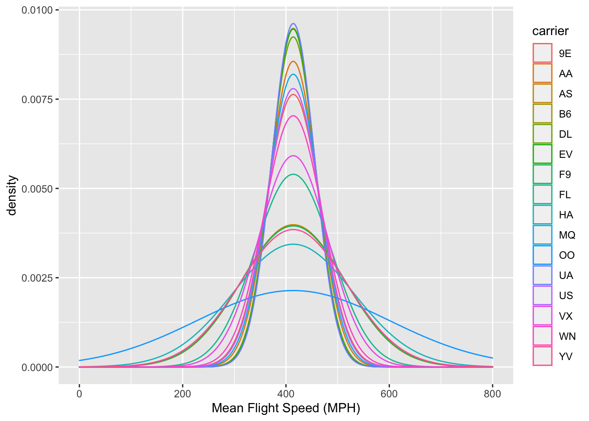

library(nycflights13)
library(tidyverse)Hmk_05
Installing data packages
Question 1: filtering
Below, I used the filter function to select flights originating from LaGuardia (LGA), on the 16th of the month, and flight distances less than 2000 miles. This is assigned to object lga_16_2000
lga_16_2000 <- filter(flights, origin == "LGA",
day == 16,
distance <= 2000)Below I have made a plot of the aforementioned filtered conditions. size changes the size of dots, alpha makes dots transparent, and theme_classic is used for aesthetic purposes.
ggplot(lga_16_2000, aes(x = distance, y = air_time)) +
geom_point(size = 0.8, alpha = 0.5) +
theme_classic()Warning: Removed 75 rows containing missing values (geom_point).
Question 2: dealing with NAs
Make a data frame of all of the rows of flights that have values for both arr_time and dep_time - that is, neither of those values are NA.
The & symbol is used to filter two values that both exist
dep_arr_times <- filter(flights, arr_time & dep_time)filtering NAs
I used na.rm = TRUE to remove the missing value error message
lga_16_2000_na <- filter(flights, origin == "LGA",
day == 16,
distance <= 2000)
ggplot(lga_16_2000_na, aes(x = distance, y = air_time, )) +
geom_point(size = 0.8, alpha = 0.5, na.rm = TRUE) +
theme_classic()Question 3: adding columns
Create a data frame of average flight speeds, based on air_time and distance. Make either a histogram or a density plot of the data. If you like, you may break the data out (e.g. by airline, or some other variable) in a way that you think makes sense.
Below I calculate mean_flight_speed by dividing distance by air_time.
I use na.rm = TRUE to omit NA values.
mean_air_time_hrs <- mean(flights$air_time, na.rm = TRUE) / 60
mean_flight_speed <- mean(flights$distance, na.rm = TRUE) / mean_air_time_hrsHere I create a density plot of each carrier’s mean_flight_speed.
Using scale_x_continuous I rename the x axis and limit it to (0, 800)
ggplot(flights, aes(x = mean_flight_speed)) +
geom_density(aes(color = carrier),
na.rm = TRUE) +
scale_x_continuous(name = "Mean Flight Speed (MPH)",
limits = c(0, 800))